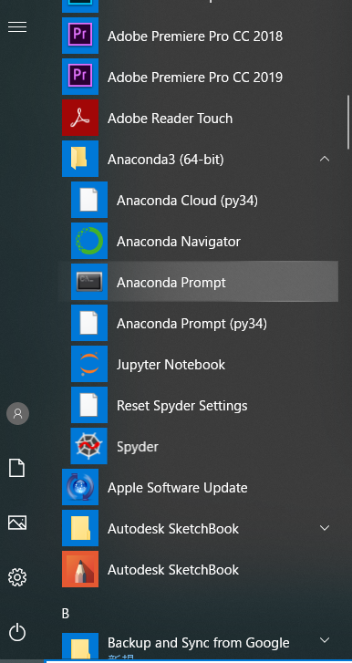
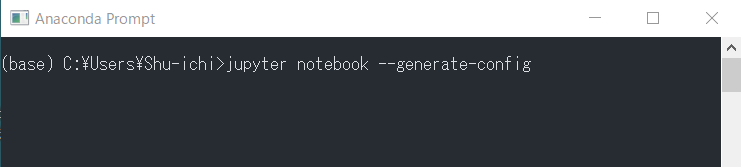
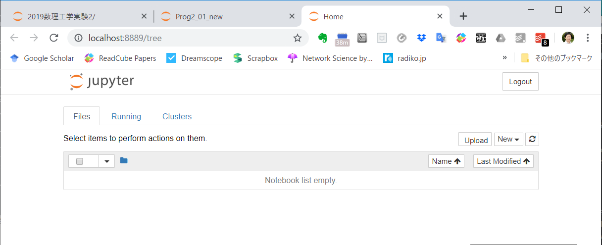
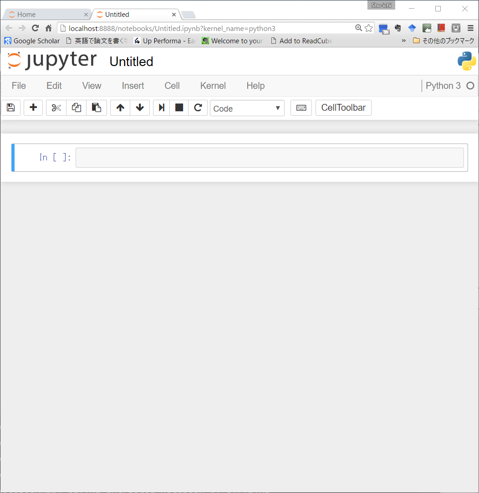
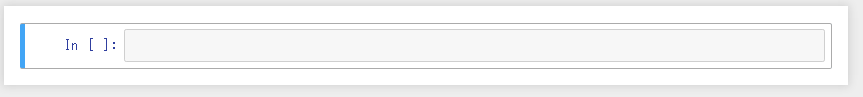
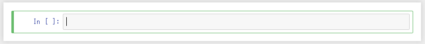
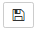
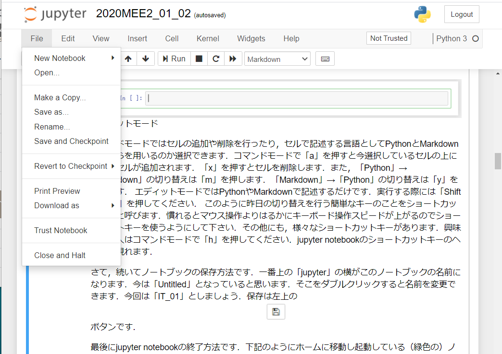
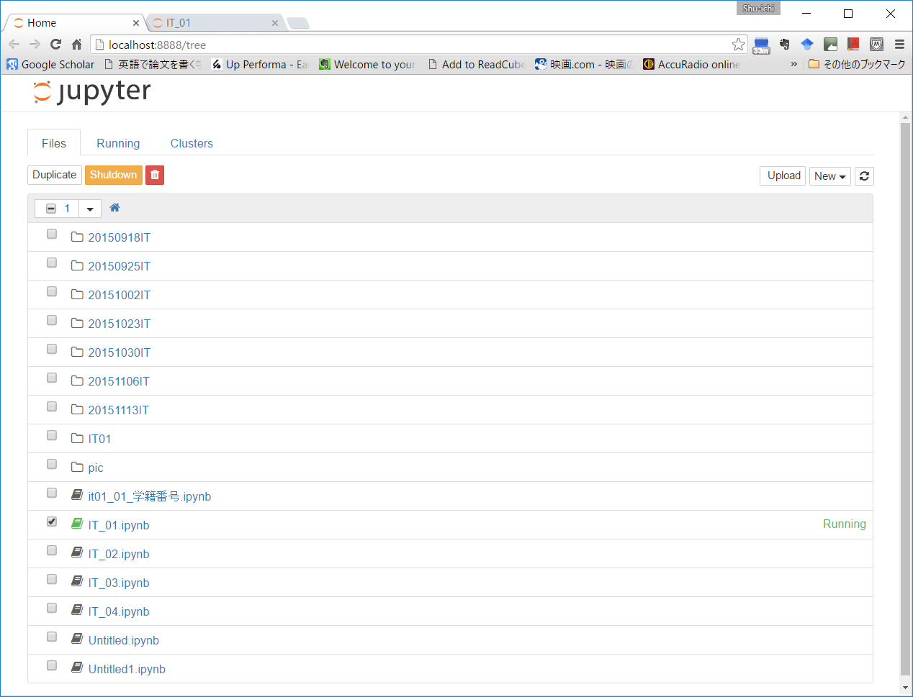

事前準備-Jupyter notebookの使い方#
0.1 Jupyter notebookの基本設定#
本講義ではJupyter Notebookを使ってプログラムを実行します．まず設定を行います．
初めに，この講義で使うフォルダを作ります．「ドキュメント」フォルダ中に「workspace」というフォルダを作り、その中に「python」というフォルダを作成してください．この講義で作ったプログラムはすべてこのフォルダの中に入ります． 次に，Windowsメニューから「Anaconda Prompt」を立ち上げて下さい。

そこで、以下の様にコマンドを打ってください。

次に、「C:\Users\XXXX\.jupyter」というフォルダにある「jupyter_notebook_config.py」というファイルをh開き（多くの人はSpyderで開くことになる。一年次の講義でSpyderを使っているので。）、多分202行目にある
c.NotebookApp.notebook_dir = ''
という部分を
c.NotebookApp.notebook_dir = 'C:\\Users\\XXXX\\Documents\\workspace\\python'
へ変更して保存してください。ここで「XXXX」は自分のユーザ名です。これでJupyter Notebookを使う準備が整いました。 終わったら、今立ち上がっているアプリを全て閉じて、Windowsメニューから「Jupyter notebook」を立ち上げてください。立ち上がったときに何もフォルダが見えない状態であれば設定完了です。

0.2 Jupyter notebookの基本操作#
それでは、「倣うより慣れろと言うことで早速やってみましょう。
0.2.1 Jupyter notebookの作成#
右上の「New」をクリックし現れた選択肢から「Python3」をクリックします．すると以下のウインドウが現れます．

左に緑の縦線があり「in [ ]:」と書かれている部分がインタラクティブシェルになります（青の縦線の場合，一度「Enter」を押して左の縦線を緑色にして下さい）．先ほどと同様に”Hello world”と打ち最後に「Shift + Enter」を押してください．プログラムが実行されます．プログラムを実行するだけならこれだけで良いのですが，jupyter notebookはプログラミングを学ぶ上で便利な機能を幾つか備えてます．例えば，PythonだけでなくMarkdown言語（html，TeXも含む）も使用できるので，Markdownを用いてメモを加えながらプログラミング学習を進めることが出来ます．本講義でもぜひ自分でメモを取りながらプログラミング学習を進めて下さい。
0.2.2 Jupyter notebookの編集#
青もしくは緑で囲まれた領域を「セル（Cell）」と呼びます．セルは「コマンドモード（青）」，「エディットモード（緑）」の２つに場合分けされます。「Enterキー」で「コマンドモード」→「エディットモード」の切り替えを行い，「Escキー」で「エディットモード」→「コマンドモード」の切り替えを行います．
 コマンドモード
 エディットモード
コマンドモードではセルの追加や削除を行ったり，セルで記述する言語としてPythonとMarkdownのどちらを用いるのか選択できます．コマンドモードで「a」を押すと今選択しているセルの上に新しいセルが追加されます．「x」を押すとセルを削除します．また，「Python」→「Markdown」の切り替えは「m」を押します．「Markdown」→「Python」の切り替えは「y」を押します． エディットモードではPythonやMarkdownで記述するだけです．実行する際には「Shift + Enter」を押してください． このように昨日の切り替えを行う簡単なキーのことをショートカットキーと呼びます．慣れるとマウス操作よりはるかにキーボード操作スピードが上がるのでショートカットキーを使うようにして下さい．その他にも，様々なショートカットキーがあります．興味のある人はコマンドモードで「h」を押してください．jupyter notebookのショートカットキーのヘルプが現れます．
0.2.3 Jupyter notebookの保存と終了#
さて，続いてノートブックの保存方法です．一番上の「jupyter」の横がこのノートブックの名前になります．今は「Untitled」となっていると思います．そこをダブルクリックすると名前を変更できます．今回は「IT_01」としましょう．保存は左上のボタンです．
最後にjupyter notebookの終了方法です．2つやり方があります．
1つのやり方は「File」にカーソルを載せ，「Close and Halt」をクリックする方法です．

2つ目のやり方は下記のようにホームに移動し起動している（緑色の）ノートブックにチェックを入れ，左上のshutdownボタンを押す方法です．

どちらのやり方で終了した場合でも，最後にjupyter notebookを起動した「Anaconda Prompt」のコマンドラインで「Ctrl+c」を押してください．これで，jupyter notebookが正常に終了されます．決して，ブラウザの右上のバツボタンでいきなり終了しないようにして下さい。
0.3 Jupyter notebookファイルの提出#
この演習では、Jupyter notebookファイル（拡張子が「.ipynb」のファイル）を提出してもらいます。提出方法は以下の通りです。
Jupyter notebookを終了する。
以下で設定したフォルダを開く。
c.NotebookApp.notebook_dir = 'C:\\Users\\XXXX\\Documents\\workspace\\python'